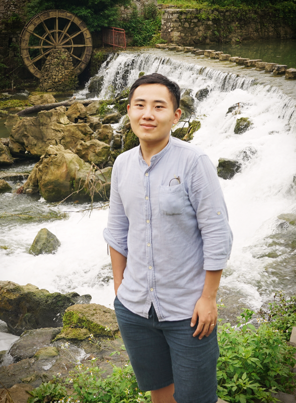

| 会前课程简介 | |||
|---|---|---|---|
| 作为大会的组成部分，Chinagraph 2024将在10月10日举办会前课程，为国内图形学领域的学生、教师和相关行业技术人员提供系统的主题内容讲授。欢迎参加。 |
| 会前课程列表 | |||
|---|---|---|---|
| 会前课程详情 | |||
|---|---|---|---|
| 课程1：NeRF&3DGS基础与进阶 | |||
| 课程简介 | |||
| 近年来，三维建模与渲染领域因为NeRF与3DGS的兴起而受到学术界的热切关注。NeRF作为一种早期的神经场景表示，与传统的点云和网格等三维表示相比，在精细度、模型紧凑度以及渲染的真实感方面实现了巨大的飞跃。而相比于NeRF，3DGS在渲染速度、训练速度以及三维场景表达能力等方面再次实现了突破性的进展。本课程旨在系统地讲解NeRF与3DGS技术，并带大家了解基于NeRF/3DGS的前沿科研进展。
| |||
| 课程大纲 | |||
| 主持人：彭思达 | |||
| 讲者介绍 | |||
| 彭思达：浙江大学软件学院“百人计划”研究员，博士生导师，启真优秀青年学者。2023年获得浙江大学计算机科学与技术博士学位。研究方向为三维计算机视觉，代表工作为EasyVolCap、Neural Body、PVNet。至今在TPAMI、CVPR、ICCV等期刊或会议发表四十余篇论文，谷歌学术引用3900余次，其中一篇一作论文获得CVPR最佳论文提名，在GitHub开源获得上万次stars。曾获得2023年全球IMC三维重建挑战赛冠军、2023年世界人工智能大会云帆奖-明日之星、2022 Apple Scholar、2020年CCF-CV学术新锐奖、2023/2021年中国CCF图形开源软件奖。 |
| 易冉： 上海交通大学计算机科学与工程系助理教授。2016年获得清华大学工学学士学位，2021年获得清华大学工学博士学位。从事计算机图形学、计算机视觉等方面的研究。发表录用60余篇论文于IEEE TPAMI、ACM TOG、SIGGRAPH、CVPR等期刊会议，其中CCF-A类论文40余篇。入选第八届中国科协“青年人才托举工程”，获2021年北京市科技进步二等奖，2022年中国图象图形学学会高等教育教学成果一等奖，2022年CCF-腾讯犀牛鸟基金卓越项目，2021年中国图象图形学学会石青云女科学家奖(青英组)，2022年中国人工智能学会优秀博士学位论文，2022年瑞士Chorafas青年研究奖，2023年ACM SIGAI China新星奖，2019年中国计算机学会计算机视觉专委会学术新锐奖。担任中国图象图形学学会智能图形专委会副秘书长，TPAMI、IJCV、TIP、CVPR、ICCV、NeurIPS、ICLR、AAAI等国际期刊会议审稿人。 |
| 姚遥：南京大学智能科学与技术学院副教授，国家级人才计划青年项目入选者。前苹果公司高级研究员，Altizure创始团队核心成员（被苹果收购）。主要研究方向为三维计算机视觉，包括三维重建、可微渲染及三维内容生成。代表工作包括MVSNet系列工作、BlendedMVS数据集及NeILF系列工作，文章总引用数超3000，曾获2020年国际模式识别大会最佳学生论文奖。个人主页：https://yoyo000.github.io |
| 课程2：面向具身智能的图形计算 |
|---|
| 课程简介 |
| 在人工智能迅速发展的今天，具身智能的研究成为图形学领域的重要方向。本课程旨在探讨具身智能在图形计算中的应用，涵盖从仿真环境构建到物理驱动的智能体迁移等多个主题，具体包括：1. 探讨如何为具身智能构建有效的仿真环境，分析任务设计、智能体具身化及资源创建的关键要素；2. 介绍生成式仿真在具身智能中的最新进展，探索其在未来应用中的潜力；3. 介绍动画技术如何促进拟人机器人的发展，实现从虚拟角色到真实机器人之间的转变；4. 深入剖析强化学习在实际应用中的挑战，特别是仿真到现实（Sim2Real）技术的基本原理；5. 探讨如何通过物理建模增强Sim2Real技术的可靠性和有效性，为具身智能提供更坚实的理论基础。本次会前课程将为与会者提供深入的见解和实用的工具，帮助他们在具身智能和图形计算的交叉领域取得突破。
|
| 课程大纲 |
| 主持人：弋力 |
| 讲者介绍 |
| 顾家远：上海科技大学信息科学与技术学院助理教授，博士生导师。博士毕业于加州大学圣地亚哥分校，师从苏昊教授。2018年本科毕业于北京大学信息科学技学院智能科学系。研究方向为具身智能，聚焦于服务于具身智能的三维视觉和可泛化的机器人决策模型，在计算机视觉、机器学习、机器人等国际顶级学会会议（CVPR，NeurIPS，ICLR，ICRA等）上均有发表。参与的项目Open X-Embodiement获得了ICRA 2024的Best Paper Award。同时，他也担任相关领域会议的审稿人，并在RSS，ECCV，CVPR等学术会议上组织过相关的研讨会和教程。 |
| 赵昊： 清华大学智能产业研究院助理教授，于清华大学电子工程系获得学士和博士学位，曾于英特尔中国研究院担任研究员，曾在北京大学从事博士后研究。他在CVPR等顶级学术会议以及IJCV等顶级学术期刊上发表了40余篇研究论文，赢得过多项三维场景理解算法挑战赛的冠军，并主导研发了全球首个开源的模块化真实感自动驾驶仿真器MARS，在CICAI 2023获得Best Paper Runner-up奖项。其主导研发的渲染阶段可调整精度速度的神经渲染方法SlimmeRF于3DV 2024获得Best Paper奖项。 |  |
| 弋力：清华大学交叉信息研究院助理教授。他在斯坦福大学取得博士学位，导师为美国三院院士Leonidas J. Guibas教授，毕业后在谷歌研究院任研究科学家。他近期的研究聚焦于三维视觉与具身智能，他的研究目标是赋予机器人理解并与三维世界交互的能力。他在计算机顶级会议期刊上已发表论文六十余篇，引用数两万余次，代表作品包括ShapeNet Part，SyncSpecCNN，PointNet++等，大大影响了三维深度学习这一领域的出现与发展。此外他还曾担任CVPR、IJCAI、NeurIPS等顶会的领域主席与SIGGRAPH TPC。 |
| 许华哲：清华大学交叉信息研究院助理教授，博导，清华大学具身智能实验室负责人。博士后就读于斯坦福大学，博士毕业于加州大学伯克利分校。其研究领域是具身人工智能（Embodied AI）的理论、算法与应用。许华哲曾获顶级智能机器人会议CoRL'23最佳系统论文奖，2024年WAIC“云帆奖”，并在IJRR, RSS，NeurIPS等发表顶级期刊/会议论文五十余篇，代表性工作曾被MIT Tech Review，Stanford HAI等媒体报道。曾在IJCAI2023、IJCAI2024、ICRA2024、ICLR2025担任领域主席/副主编。 |
| 陈睿：清华大学机械系助理研究员。主要研究方向包括智能机器人、三维视觉、触觉感知，承担国家自然基金青年基金项目，入选中国博士后科学基金会博士后创新人才支持计划、北京市科协青年人才托举工程及清华大学“水木学者”计划，在TRO/TPAMI/CVPR/ICRA等发表论文30余篇。曾多次获得国际会议最佳论文奖励，获全国发明展览会金奖、北京发明创新大赛特等奖。 |  |